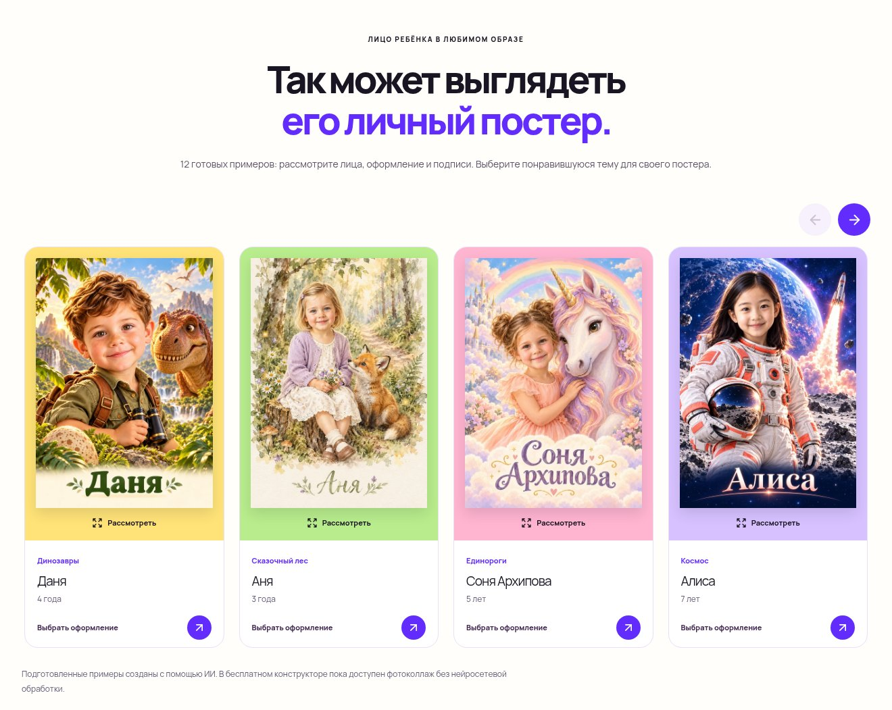

МОЙ ГЕРОЙ · 29 ОКТЯБРЯ 2026
Все примеры.
В одном ряду.
На компьютере видны четыре постера. На телефоне — один и край следующего: листайте пальцем или используйте стрелки. Счётчика в карусели нет. Все 12 примеров, просмотр крупно и выбор оформления сохранены.
Открыть галерею ↗Компьютер


Телефон

Свайп листает галерею; движение пальцем вверх и вниз прокручивает страницу. Стрелки доступны и на телефоне. На клавиатуре можно использовать стрелки, Home и End, когда галерея в фокусе.
Примеры созданы с помощью ИИ. Конструктор остаётся демонстрационным. Фотографии пользователей не публикуются. Другие обновления →